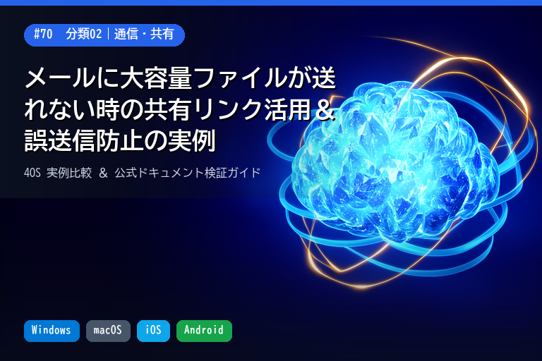

#70｜分類02: コミュニケーション・情報共有 2026-11-24

メールに大容量ファイルが送れない時の共有リンク活用＆誤送信防止の実例｜Windows・macOS・iOS・Android
「大切な資料をメールで送ろうとしたら、ファイルサイズが大きすぎてエラーが出てしまった……」
そんな経験はありませんか？ 多くのメールサービスでは、添付ファイルの容量制限（一般的に25MB〜）があるため、高画質な動画や重いPDF、大量の画像を含むフォルダを送るには工夫が必要です。
この記事では、Windows、macOS、iOS、Androidの4つの主要OSにおいて、「クラウドストレージの共有リンク」を活用してスマートに大容量ファイルを送る手順と、万が一の誤送信を防ぐための対策を徹底解説します。これを知っておくだけで、仕事やプライベートでの情報共有が劇的にスムーズになります。
4OS比較早見表
| OS | 推奨クラウドストレージ | 主要な操作アプリ | 特徴・注意点 |
|---|---|---|---|
| Windows | OneDrive | エクスプローラー | 標準統合が強力。右クリックから直接共有可能。 |
| macOS | Google ドライブ | Finder / ブラウザ | iCloudとの使い分けに注意。ブラウザ操作が確実。 |
| iOS | Google ドライブ / iCloud | 「ファイル」アプリ | 直接添付は不可。必ずクラウドリンクへ誘導。 |
| Android | Google ドライブ | 「Google ドライブ」アプリ | 機種を問わずGoogleエコシステムで統一。 |
1. Windows 11 での実例手順
Windows環境では、OS標準のOneDriveを活用するのが最もスムーズな方法です。
公式手順：大容量ファイルを OneDrive で共有リンク化
【前提】 Windows 11 標準の「エクスプローラー」、または Microsoft Edge / Chrome を使用。
- ステップ A（保存場所確認）: エクスプローラーを開き、「この PC」>「OneDrive」フォルダを確認します。※同期されていないローカルファイルは共有できないため、必ずOneDriveフォルダ内にファイルを移動させてください。
- ステップ B（アップロード・共有設定）:
- ファイルを OneDrive フォルダへドラッグ＆ドロップしてアップロードします。
- アップロード完了後、ファイルを右クリックし「共有」を選択。
- 「リンクの編集」から「特定の人は誰でもアクセス可能にする」「有効期限なし」等に設定（※組織ポリシーにより制限される場合があります）。
- ステップ C（メール送信）: 生成された共有 URL をコピーし、Outlook や Thunderbird の本文に貼り付けて送信します。
標準機能の制限事項・注意点
- ローカルファイルとの混同: 「この PC」内のフォルダにあるファイルを直接添付しようとすると容量エラーになります。「OneDrive フォルダ内」に配置していることを徹底しましょう。
- 組織ポリシーの影響: Microsoft 365（法人版）を利用している場合、管理者が「有効期限」や「パスワード必須」を強制していることがあります。
よくあるトラブルと解決法
- トラブル①：ファイルサイズ超過エラー
- 原因: OneDriveの無料プラン等の容量制限に抵触。
- 解決: ファイルを圧縮するか、Google ドライブ等へ一時的に移動させて共有します。
- トラブル②：共有リンクで「アクセスできません」と表示される
- 原因: リンクの有効期限切れやセキュリティ設定の変更。
- 解決: OneDrive上でファイルの再アップロードを行い、新しい共有リンクを発行してください。
- トラブル③：誤送信後の取り消しができない
- 原因: Outlookの「未送メール削除」はサーバー転送後に無効になるため。
- 解決: クラウド上の「バージョン管理」を活用します。OneDrive上のファイルを正しい状態に上書き・復元することで、相手への影響を最小限に抑えます。
2. macOS での実例手順
MacではFinderとGoogleドライブの連携、またはブラウザ操作を組み合わせるのが確実です。
公式手順：Mac で Google ドライブ経由で大容量ファイルを送る
【前提】 Finder、システム設定。
- ステップ A（アップロード）: Finderのサイドバーから「Google ドライブ」を選択し、ファイルをドラッグ＆ドロップしてアップロードします。（またはブラウザ版Googleドライブを使用）。
- ステップ B（共有リンク発行）: ファイルを右クリックし「詳細情報表示」からコピーするか、「共有」ボタンからURLを取得します。※同期が不安定な場合はブラウザ操作を推奨。
- ステップ C（メール送信）: 「Mail.app」や「メッセージ」アプリにURLを貼り付けて送信します。
標準機能の制限事項・注意点
- 「ファイル」アプリでの共有不可: macOS標準の「ファイル」アプリ内だけで完結させることは難しく、Google ドライブ等の外部クラウド連携が必須です。
- 未送メッセージ削除の条件: 「システム設定 > メール > 送信確認」がオンになっていないと機能しません。※Outlook for Mac使用時は独自仕様に注意。
よくあるトラブルと解決法
- トラブル①：Finder で Google ドライブが表示されない
- 原因: アプリの認証切れや、システム設定でのチェック漏れ。
- 解決: ブラウザ版Googleドライブを使用するか、デスクトップアプリを再ログインさせます。
- トラブル②：共有リンクの有効期限切れ
- 原因: 組織ポリシー等によるデフォルトの期限設定。
- 解決: リンクを再発行し、「新しいURLをご参照ください」と追記して再送します。
- トラブル③：誤送信後の即時キャンセル失敗
- 原因: 数秒〜数分でサーバーへ転送されるため、標準機能では取り消せない。
- 解決: Google ドライブの「操作履歴」を確認し、誤って共有したリンクを破棄して新しいバージョンを作成・送信します。
3. iOS（iPhone / iPad）での実例手順
モバイル端末では、メールアプリから直接送るのではなく、「クラウドへの誘導」を基本戦略とします。
公式手順：「ファイル」アプリから大容量ファイルをクラウドへ
【前提】 「メール」「設定」「ファイル」アプリ。
- ステップ A（アップロード準備）: アプリ一覧から「Google ドライブ」または「iCloud Drive」を起動し、ファイルを配置します。
- ステップ B（共有リンク取得）: ファイルを選択し「共有」ボタンをタップ。URLをコピーします。（※iCloudの場合は、容量オーバー時にicloud.com経由のリンク発行が必要な場合があります）。
- ステップ C（送信）: メールアプリを開き、コピーしたURLを本文に貼り付けます。
標準機能の制限事項・注意点
- 「共有して…で送る」の容量制限: iPhoneのメールアプリ内で直接「共有してiCloudで送る」といった簡易的な大容量添付は非対応です。必ずクラウドリンクへの誘導が必要です。
- iCloud Drive と Google ドライブの違い: 両方利用可能なため、フォルダ構造を混同しないよう注意してください。
よくあるトラブルと解決法
- トラブル①：メール添付時に「容量オーバー」と表示される
- 原因: iCloudストレージの空き容量不足、またはファイルサイズ過大。
- 解決: 「設定 > [名前] > iCloud」で容量を確認し、不要なデータを削除するかGoogleドライブへ移管します。
- トラブル②：共有リンクが開けない（403 Forbidden）
- 原因: アクセス制限の設定ミスやSafariのキャッシュ問題。
- 解決: ファイルを再アップロードし、新しいURLを発行して再送します。
- トラブル③：誤って送ってしまったメールの取り消し
- 原因: iOSには「未送メッセージ削除」機能が存在しないため。
- 解決: クラウド側の復元機能を頼るしかありません。リンクを無効化する操作を最優先で行います。
4. Android での実例手順
Androidは機種（Pixel, Galaxy等）を問わず、Googleドライブを中心とした操作で統一するのが最も効率的です。
公式手順：機種横断的な Google ドライブ活用と履歴確認
【前提】 「メール」「ファイル」アプリ。
- ステップ A（アップロード）: 「Google ドライブ」アプリを開き、ギャラリーやストレージからファイルをアップロードします。※機種により「My Files」等の名称がある場合がありますが、操作は同様です。
- ステップ B（共有リンク発行）: ファイルを長押しし、「共有」またはメニューからURLをコピーします。
- ステップ C（送信）: メールアプリでURLを貼り付けて送信します。
標準機能の制限事項・注意点
- 「ファイル」アプリと Google ドライブの違い: システムフォルダ内のファイルを直接メール添付すると容量オーバーになりやすいため、必ずGoogleドライブを介した共有リンクを使用するのが鉄則です。
- 機種ごとの名称差: Samsung Galaxyでは「My Files」、Pixel等では「ファイル」と名称が異なりますが、いずれもGoogleドライブへの連携は必須前提となります。
よくあるトラブルと解決法
- トラブル①：アップロード中に通信エラーになる
- 原因: Wi-Fiの不安定さやデータ通話制限による中断。
- 解決: Wi-Fiに接続し、Googleドライブアプリの「オフラインで使用可能」設定などを確認しながら再試行します。
- トラブル②：共有リンクが「権限なし」と表示される
- 原因: 共有範囲を「制限付き」にしたまま送信した。
- 解決: ドライブアプリで共有設定を「リンクを知っている全員」に変更し、URLを再コピーします。
- トラブル③：誤送信後の取り消しができない
- 原因: Android標準のメールアプリではサーバー転送後の取り消し不可。
- 解決: Google ドライブのバージョン管理機能を使い、誤ったリンク先の内容を上書きまたは削除します。
よくあるトラブルと解決チェックリスト
| トラブル事象 | 原因の可能性 | 解決策・チェック項目 |
|---|---|---|
| ファイルサイズ超過エラー | メールサーバーの制限（25MB〜） | クラウドストレージへアップロードし、共有URLを送信しているか確認。 |
| リンクで「アクセス拒否」 | 権限設定が「制限付き」になっている | 共有設定を「リンクを知っている全員」に変更して再発行。 |
| アップロードが途中で止まる | 通信環境の不安定（特にモバイル通信） | Wi-Fi環境に切り替えるか、ファイルサイズを分割する。 |
| 誤送信後の取り消し不可 | サーバーへ既に転送済み | クラウド側の「バージョン管理」や「リンク無効化」で事後対応を行う。 |
まとめ：快適なマルチOS環境を作るポイント
大容量ファイルの共有において最も重要なのは、「メールに直接添付するのではなく、クラウドをハブにする」という基本戦略です。WindowsならOneDrive、それ以外ならGoogleドライブといった、各OSとの親和性の高いツールを選ぶことで、操作の迷いを減らすことができます。
また、より快適でプロフェッショナルなコミュニケーション環境を構築するためには、以下の周辺機器・ツールの導入も検討の価値があります。
- クラウドストレージ: 常に最新のファイルを同期し、どこからでもリンクを発行できる基盤として必須です。
- 高音質マイク・ヘッドセット: ファイル共有だけでなく、オンライン会議での意思疎通をスムーズにします。
- Webカメラ: 視覚的な情報共有は、テキストやファイルだけでは伝わらないニュアンスを補完します。
これらのツールを組み合わせることで、OSの壁を越えたストレスフリーな情報共有環境が完成します。まずは今日から、重いファイルは「リンク」で送る習慣を取り入れてみましょう。
参考文献・公式ドキュメント（一次情報ソース）
本記事の手順・仕様は以下の各OSおよびツールの公式ドキュメントに基づいています。OSアップデートによりメニュー名称や挙動が変わる場合があるため、最新仕様の確認にもご活用ください。
- [Windows] OneDrive に保存されている以前のバージョンのファイルを復元する - Microsoft サポート
- [Windows] OneDrive の同期の問題を解決する - Microsoft サポート
- [macOS / 共通] パソコン版 Google ドライブを使用する - Google ドライブ ヘルプ
- [iOS] iPhoneの「ファイル」でファイルやフォルダを変更する - Apple サポート (日本)
- [Android] Google ドライブにファイルやフォルダをアップロードする - Google ドライブ ヘルプ
- [Android / 共通] 操作履歴とファイル バージョンを確認する - Google ドライブ ヘルプ